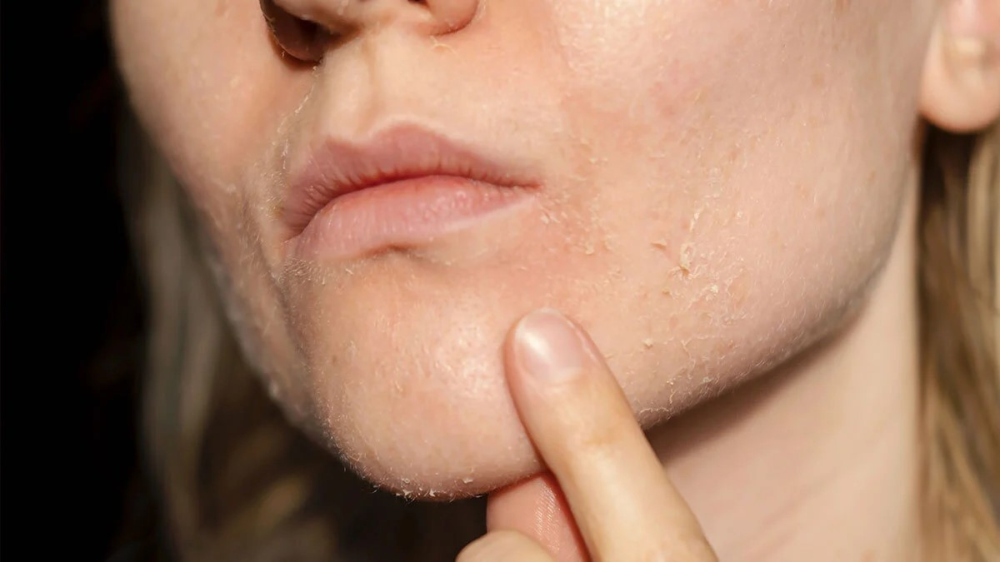
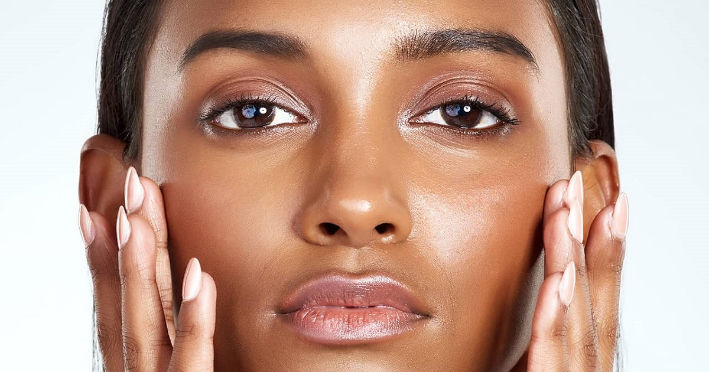
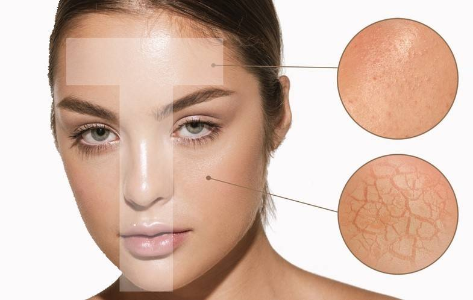

Dry Skin
Need extra hydration
How do I know I Have It?
The skin has an exaggerated coarse texture and is tight, pulling, and flaking.
What Will I See Or Feel?
skin that is flaky, dull, taut, and textured. Glyphic lines that are visible
Tip🌼:Apply your moisturizer while your skin is still slightly damp to lock in maximum moisture.
View Products
Oily Skin
Balance is the key to glowy look
How do I know I Have It?
shiny, oily skin that is typically in T-Panel for younger skin or U-Panel for older skin. Comedones are common, pores are enlarged, and breakouts may occur frequently.
What Will I See Or Feel?
Shiny Face
Tip🌼: Keep using moisturizer!It's also necessary for oily skin, else it will produce extra oil to compensate
View Products
Combination Skin
Finding balance for healthy skin
How do I know I Have It?
Skin feels balanced but oily in some area
What Will I See Or Feel?
This type of skin adapts to seasonal and environmental changes in a natural way. In the winter, it could be a little drier but not extremely dry. In the summer, when there is more humidity, it could be a bit oily. Seasons affect skin. There is never extreme sensitivity, flaking, or dryness.
Tip🌼: Use a reacher cream on your dry checks and a lightweight gel on your T-zone for perfect balance.
View ProductsSensitive Skin
Gentle care for your delicate skin
How do I know I Have It?
Skin that is readily irritated and responds to outside stimuli,such as new products,weather changes,or specific materials.It frequently itches or feel painful
What Will I See Or Feel?
Redness,dryness,burning,or itching.The skin responds rapidly to external stimuli and may appear thin or have obvious red spots.
Tip🌼: Befor using new products on your face,always do a 24-hour patch test on your inner arm.
View ProductsNormal Skin
Naturally balanced and healthy-looking
How do I know I Have It?
Skin that is not too dry and not too oily
What Will I See Or Feel?
Few or no imperfections,no extreme sensivity, pores that are hardly noticeable,a glowing skin.
Tip🌼: Keep it simple!Your goal is to keep this balance with a simple routine: cleanser,moisturizer,SPF.
View Products